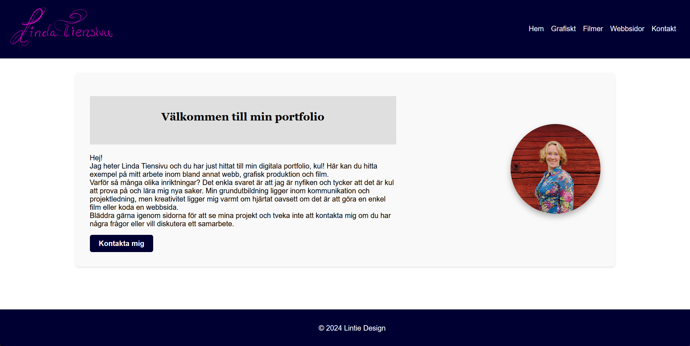

Den här sidan - min portfolio
Den här sidan som du tittar på just nu har jag kodat från grunden i HTML, CSS och Javascript. Sidan är under ständig utveckling och jag fyller på den eftersom.

Den här sidan som du tittar på just nu har jag kodat från grunden i HTML, CSS och Javascript. Sidan är under ständig utveckling och jag fyller på den eftersom.

Den här sidan togs fram efter en förstudie som jag och en klasskamrat gjorde i samband med affärsutvecklarutbildningen. Skandinavisk måltidsupplevelse är ett delprojekt inom SITE projektet. Syftet med websidan är att samla alla producenter i Sälen, Idre, Trysil och Engerdal. Webbsidan är skapad i Wordpress och Divi. Jag hade ingen tidigare erfarenhet av att skapa webbsidor innan, förutom sidorna som jag hade på gymmen som jag hade. Dessa är dock nedlaga och webbsidorna är nedtagna.
Sidan är under uppbygnad och gjord i Zenler. Efter att ha drivit gym i över 13 år, så kunde jag inte släppa det helt. Träning är ju trots allt mitt huvudområde och det jag arbetat med i stora delar av mitt liv. Därför har jag flyttat online istället. Vad det landar i slutändat, det får vi se.